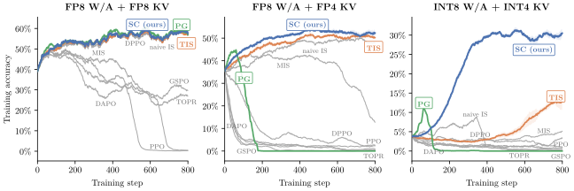
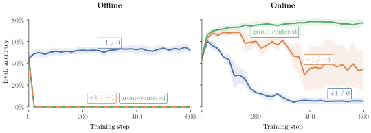
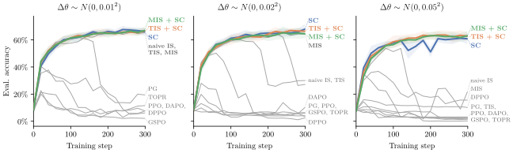
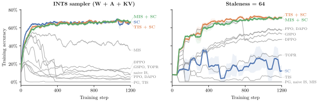
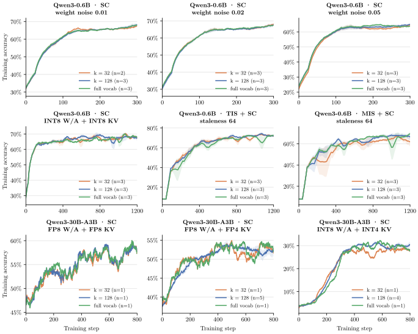

得分中心化稳定
离策略强化学习
摘要
大语言模型的强化学习（RL）对训练引擎与推理引擎之间的微小差异极为敏感，这种差异通常被称为训练-推理不匹配（TIM）。 然而，完全消除 TIM 并不现实，因为这将大幅牺牲采样轨迹的效率。 在本文中，我们表明 TIM 下 RL 的不稳定性主要由 漂移 引起：这是训练引擎与推理引擎之间的一种持续偏差，会随每个训练步骤累积。 我们推导出一个加性的 “得分中心化”修正项，通过抵消漂移来稳定 TIM 下的 RL。 在训练 0.6B 至 30B 参数规模的模型时，在量化条件下，得分中心化本身就能达到或超过基于重要性采样的方法，且随着不匹配程度加剧，差距进一步扩大。 由于该修正是加性的，得分中心化还可以与重要性采样组合使用——在我们的陈旧度实验中，二者的组合优于纯重要性采样基线。

1 引言
强化学习是当今大语言模型训练中的一个关键环节，这一点体现在分配给它的训练算力占比越来越大 (OpenAI, 2024; DeepSeek-AI, 2025; Khatri et al., 2026; Microsoft AI Team, 2026)。 这通常通过 PPO、GRPO、DAPO 和 IcePop 等算法实现 (Schulman et al., 2017; Shao et al., 2024; Yu et al., 2025; Ling Team, 2025)，它们均基于策略梯度方法 (Williams, 1992)。
基于策略梯度的 LLM 强化学习训练包括：采样轨迹、为每条轨迹分配奖励，以及在加权轨迹上计算梯度。 更形式化地说，策略梯度方法计算轨迹 上期望奖励的梯度，这些轨迹来自策略 ；梯度等于由奖励 加权的得分的期望：
| (1) |
对实践者而言至关重要的是，计算 Equation 1 的右侧需要模型进行两次独立的前向传播：一次是采样器（推理引擎）的前向传播以生成轨迹，另一次是训练器的前向传播以在生成的轨迹上计算梯度。 理论上，训练器和采样器代表同一个模型，因此它们的输出应当完全相同。 然而在实践中，这很少成立。 大多数 RL 代码库允许训练引擎与推理引擎之间存在细小的数值差异，从而产生 训练-推理不匹配（TIM），这可能降低训练性能 (Khatri et al., 2026)，甚至导致奖励完全崩溃 (Liu et al., 2025b)。相比之下，监督微调即使使用来自不同模型或人工标注者的样本，通常也具有稳定的训练动态，无需任何调整。
在本工作中，我们研究了 RL 对训练-推理不匹配敏感的原因。 通过分析策略梯度更新，我们表明它含有一个 漂移 项，当且仅当训练策略与采样策略一致时该项等于 0。 基于这一发现，我们提出一种在 TIM 下稳定 RL 训练的新方法，称为 得分中心化。11 1 代码：github.com/martin-marek/score-centering 正如我们在 Qwen3-0.6B 于 Countdown 上以及 Qwen3-30B-A3B-Base 于 INTELLECT-2 数据的数学子集上的实验所示，得分中心化能够达到或超过基于重要性采样的最先进训练稳定化技术。 由于两种方法相互正交，得分中心化可以与重要性采样结合使用以获得进一步提升。
2 背景与相关工作
2.1 训练-推理不匹配的来源
Equation 1 中的朴素策略梯度恒等式仅在用于计算梯度的策略与产生轨迹的策略相同时成立。 然而在实践中，轨迹由 采样器 生成，而梯度通过 训练器 计算。 因此，当 时，就会发生训练-推理不匹配。
TIM 的来源有很多，每一种的严重程度各异。在最坏的情况下，训练引擎与推理引擎以不同的精度运行，或者基于两个独立的代码库，二者各自可能存在不同的（难以察觉的）缺陷，导致输出出现细微差异 (Liu et al., 2025a; FlashInfer contributors, 2026)。 在较轻的情况下，即使两个引擎都正确且使用相同的 GPU 内核，由于浮点运算的非结合性，它们仍可能产生不同的输出。22 2 例如，在 fp4_e2m1 精度下，，但 。 由于采样是自回归的，而训练通常沿序列维度并行化，训练引擎与推理引擎可能会以不同的输入形状调用相同的内核，从而改变归约的顺序，导致细小的浮点差异。 批不变内核消除了对输入形状的依赖，但需要大量的工程工作，并导致 GPU 利用率下降 (He and Thinking Machines Lab, 2025)。 将两个引擎从 bf16 精度切换到 fp16 精度也能大幅减少不匹配 (Qi et al., 2025)，但并不能完全消除它。
最后，即使训练器和生成器使用完全相同的批不变内核，TIM 也可能因更新陈旧而发生。 在 RL 中最大化 GPU 利用率需要将训练引擎与推理引擎解耦，使它们异步运行 (Fu et al., 2025)，并以连续批处理的方式提供轨迹服务 (Yu et al., 2022)。 这意味着单个训练批次，甚至单条轨迹的不同子序列，都可能由不同的模型检查点生成 (Piché et al., 2025)。 陈旧度在长上下文环境（如智能体编程）中最为严重，其中一些回合可能在几分钟内完成，而另一些可能持续数小时甚至数天 (Hou et al., 2026)。 从硬件利用的角度看，非常可取的做法是用陈旧的轨迹从算法上稳定训练，而不是试图彻底消除陈旧度 (Fu et al., 2025)。
我们的目标是提出一种在 TIM 下稳定 RL 训练的方法，从而在保证训练稳定的同时实现高硬件利用率。
2.2 重要性采样修正
假设在 Equation 1 中，轨迹来自采样器 而非训练器 ，其中 。那么我们可以使用重要性采样（IS）精确地修正训练-推理不匹配：
| (2) |
Equation 2 是针对完整序列书写的；在实践中，该比率通常按词元应用 (Zheng et al., 2025)。无论哪种方式，重要性采样都以增大方差为代价修正 TIM。加权得分会乘以重要性比率 ，该比率在稀有词元上可能取任意大的值，从而放大梯度估计的方差 (Ionides, 2008; Owen, 2013)。由于使用原始重要性比率进行训练并不稳定，实践中使用的方法会对重要性比率加以限制，这不可避免地引入偏差。
Table 1（在 Section B.2 中）表明，大多数流行的修正方法基于重要性采样，并依据重要性比率被裁剪或掩码的区域落在一个简单的网格上。一个显著的例外是 DPPO，它使用基于二值全变差的掩码区域——但其目标仍然像网格中的其他所有方法一样使用 IS 比率。在该表之外，Ye et al. (2026) 向训练器的隐藏状态注入可学习的扰动，并使用扰动后的策略作为重要性比率的分子——减小比率的厚尾而非对其进行裁剪——但仍依赖重要性采样。相比之下，得分中心化（我们在 Section 4 中引入的方法）不使用重要性比率、不做掩码、也不做裁剪——它是一个加性的修正项，其工作方式与这一网格中的每一种方法都有根本不同。
3 为什么 RL 对不匹配敏感
要理解 RL 为何对 TIM 如此敏感，理解 RL 与监督微调（SFT）的不同之处会有所帮助。 正如我们前面所指出的，SFT 在严重得多的不匹配下仍然稳定——使用完全由另一个模型离线生成的数据进行训练，且不做任何重要性采样修正 (Hinton et al., 2015; DeepSeek-AI, 2025)。 换言之，SFT 对陈旧度和内核选择完全不敏感。
关键在于，当优势为 （即奖励未做中心化或归一化）且训练完全离线（即采样器从不更新）时，策略梯度可退化为二值奖励任务上的 SFT。33 3 在实践中，优势几乎总是包含负值（例如由于组中心化 (Shao et al., 2024)），而且即使训练允许一定程度的陈旧度，它也从来不是完全离线的。 因此，我们可以将 奖励模式 和 陈旧度 视为 SFT 与 RL 之间的两个关键差异。44 4 注意，将奖励平移一个常数不会改变同策略下的期望梯度，而组中心化只是将其重新缩放 ，这里一组包含 条轨迹——对奖励做中心化的原因是它降低梯度方差 (Greensmith et al., 2004; Liu et al., 2025c)。 然而，这在离策略下并不成立：使用 的 SFT 收敛到最大似然估计 (Bishop, 2006)，而使用 奖励的 SFT 是退化的：损失无界，可能导致模型崩溃 (Ren and Sutherland, 2025)。 我们想确定这两种机制中究竟是哪一种导致了 TIM 敏感性的增加。
我们使用一个带有故意策略不匹配的玩具训练设置来检验这一点。 我们训练 Qwen3-1.7B (Yang et al., 2025)，任务为 Countdown (Gandhi et al., 2024)，并将采样器的权重相对于训练器人为地轻微扰动，以制造可控的 TIM。我们在 Section 5 中给出了这一设置的进一步论证，并测试了更真实的 TIM 来源。

Figure 2 表明，在这一设置中，离线训练仅在 （非负）奖励下稳定，而在线训练则相反——组中心化奖励 (Shao et al., 2024)（在一个组内混合了正值和负值）是 最稳定的，而 奖励——它在离线训练中最稳定——在在线训练中 最不稳定。因此我们假设存在两种不同的机制在起作用：一种使使用 负奖励的离线训练不稳定，另一种使使用 正奖励的在线训练不稳定。
本文的主要关注点是在线强化学习，因此我们不再进一步探讨使用负奖励的离线训练的不稳定性。Ren and Sutherland (2025) 认为，这种不稳定性背后的主要机制是负奖励的无界性与分布锐化的共同作用。对数概率从下方无界，因此在带负奖励的离线训练中，它们可能发散到 。这一效应在仅采样高概率词元的在线训练中并不存在。这种不对称性已有充分记载：仅对正样本进行训练（即蒸馏或拒绝微调）即使在离线情况下也完全稳定 (Hinton et al., 2015; DeepSeek-AI, 2025)，而负梯度可能拉低正确回答的概率 (Deng et al., 2025)——尽管在同策略下它们携带有用的学习信号 (Zhu et al., 2025)。
在在线训练中，我们观察到与离线训练相反的行为——仅使用正奖励是最不稳定的设置。因此我们假设，不稳定性必然源于训练过程的在线性质。 请注意，在 TIM 下使用 奖励进行在线训练本身就是一种蒸馏：训练器拟合来自采样器的成功采样轨迹，即一个自身的、有偏的副本，其权重在每一步之后都从训练器刷新。与离线蒸馏的唯一区别在于教师模型随学生模型一起移动，因此不稳定性必然源于此。
4 得分中心化
符号说明。 来自一条采样轨迹 的更新会对其各词元得分求和，每个得分由该采样轨迹的奖励（或优势） 加权。我们考察单个词元 在其前缀 条件下的期望贡献。采样器 生成词元 ； 索引词表。 与 分别是 在训练器 与采样器 下的下一词元概率， 为其得分， 为采样器下的期望得分。、 是在前缀之后采样轨迹其余部分上的期望。
考虑在奖励恒为 的环境中使用原始策略梯度进行强化学习训练。理论上不应发生任何学习——奖励恒定，因此环境中不存在“信号”。事实上，在同策略下，每个前缀处的期望梯度都为零：，因为对任意分布均有 。
然而在 TIM 下，期望梯度非零：词元由采样器 采样，而得分通过训练器 计算，因此一般而言 。 利用协方差恒等式，55 5 我们可以将某个前缀处的期望策略梯度更新分解为一个 “漂移”项和一个 “信号”项：
| (3) |
漂移是 TIM 的一种伪影，其作用相当于朝采样器方向进行蒸馏。
漂移项不携带关于哪些采样轨迹成功的信息：它仅通过奖励的均值 依赖于奖励。只有协方差项能看到哪个词元导致了哪个奖励。漂移项实际所做的是由它的方向 决定的：期望得分是以采样器为教师的交叉熵（SFT）损失的负梯度，因此原始策略梯度在每个前缀处将训练器蒸馏向采样器，并按该前缀处的期望奖励进行缩放。这纯粹是 TIM 的伪影：在同策略下，训练器已经与采样器一致，因此 ，漂移项消失。向一个 固定教师蒸馏是无害的——它会收敛到该教师的最大似然拟合。然而，采样器并非固定：它是训练器的一个有偏副本（例如量化或陈旧的），因此每一步都将训练器推向采样器；随后训练器的权重被同步回采样器，误差在反馈循环中累积而非收敛。这解释了为何在 Figure 2 中全正奖励的在线训练是最不稳定的设置。Dong et al. (2026) 同样将系统性偏差认定为 TIM 下不稳定的根本原因，并表明它会通过正反馈循环累积。
组中心化不能消除漂移。
得分中心化消除漂移。
这些观察直接启发了我们的方法，称为 得分中心化：即使在 TIM 下，我们也希望每个前缀处的期望得分为零，如同同策略时那样。我们只需从每个得分中减去采样器下的期望得分，将 替换为中心化得分 即可实现：
| (4) |
采用得分中心化后的期望策略梯度更新则变为：
| (5) | ||||
| (8) |
Equation 4 中定义的中心化得分在采样器下均值为零，因为两个期望都在同一分布下取得——漂移在每个前缀处被精确抵消，即使在离策略下也是如此。Equation 5 表明，得分中心化下的期望更新等于同策略下的期望更新，差别仅在于协方差所测量的分布——无论在同策略下还是在带重要性采样的 TIM 下，协方差都在训练分布 下测量，而得分中心化则在采样分布 下测量。在不存在 TIM 的情况下，即当 时，得分中心化是空操作，因为 Equation 4 中的修正项恰好为零。
得分中心化 vs 重要性采样。
重要性采样与得分中心化一样，也能精确抵消漂移。然而，重要性采样使用一个随机的乘性修正项，这意味着它会增大梯度方差，且其取值依赖于所采样的词元。对于稀有词元，重要性比率可能非常大，这就是几乎所有实际实现都以某种方式裁剪或屏蔽大的重要性比率（Table 1）的原因，而这又会重新引入漂移。相比之下，得分中心化是一个 加性修正项，在给定前缀时是 确定性的——它不依赖于所采样的词元，并且可以被精确计算。由于得分中心化和重要性采样以相互独立的方式修正 TIM，这两种方法可以相互组合，如 Section A.2 所述。
与经典基线的关系。
从策略梯度中减去一个零均值量是一种经典的方差缩减思想：奖励基线 (Williams, 1992) 和得分函数控制变量 (Ranganath et al., 2014) 都依赖于恒等式 。得分中心化是一种偏差修正而非方差缩减：被减去的向量在给定前缀时是确定性的，其选取是为了移动更新的均值，而在同策略下，奖励基线改变方差但不改变均值。在离策略下，等于前缀处期望奖励的奖励基线（一个精确的价值函数）在期望意义上也能抵消漂移；得分中心化无需评论家即可获得相同的期望更新。据我们所知，尚无先验方法减去期望得分本身：在同策略下它为零，而在经典离策略强化学习中它需要对动作空间求一个难以处理的期望，因此离策略方法转而依赖重要性采样。TIM 下的 LLM 强化学习训练之所以特殊，是因为期望得分既非零又可精确计算，即对下一词元的对数概率求和。
4.1 实现
存储采样器的完整下一词元分布代价过高。因此我们只记录其前 个对数概率（），并用训练器的分布对尾部建模，再重新缩放以匹配采样器的尾部质量。我们将得分中心化实现为一个标量损失：
| (9) |
其中 是采样器与训练器的尾部质量之比， 表示停止梯度。使用 甚至 在我们测试的每个设置中都等同于完整的得分中心化（Section A.4）。下面的代码片段展示了针对单个词元的最小实现：
在 Appendix A 中，我们给出了完整推导以及支持重要性权重的得分中心化广义实现。
5 实验
5.1 实验设置
我们将得分中心化与 Table 1 中的修正方法进行比较，具体训练 Qwen3-0.6B-Instruct，训练任务为 Countdown (Gandhi et al., 2024)；并训练 Qwen3-30B-A3B-Base，训练数据来自 INTELLECT-2 数据集 (Prime Intellect Team et al., 2025) 的数学子集。
共享目标。 现有方法常常将多种技术捆绑在一起：例如，DAPO 将非对称裁剪与动态采样相结合（(Yu et al., 2025)），而 IcePop 将训练引擎与推理引擎之间的 MIS 与策略版本之间的 PPO 裁剪相结合（(Ling Team, 2025)）。为了单独比较每种修正方法，我们全程使用相同的目标函数（带组中心化奖励的 REINFORCE），每种修正方法在此目标之上单独应用。所有方法共享相同的采样器、训练器、优化器和优势，每个批次进行一次 SGD 步。所有重要性比率均使用采样器记录的概率。Table 1 展示了修正规则与超参数，以及实现说明。学习率、批大小和计算开销列于 Appendix B。
失配设置。 总体而言，我们难以找到 TIM 严重到足以在数小时 GPU 时间内观察到表现最佳的方法之间具有统计显著差异的自然的实验设置。 我们认为这是训练过程中漂移累积的结果（Section 4）：在轻度 TIM 下，需要更多训练步数才能累积足够的漂移，而在累积足够之前，表现最佳的方法彼此重叠。 我们在 Section 5.2 中展示了这一点：在较小的权重噪声下，表现最佳的方法彼此重叠，无法进行比较；而随着 TIM 增大，方法会更早崩溃，它们之间的性能差距也会扩大。由于我们无法承受在极长的训练运行中以统计显著性来消融各修正方法，我们改为有意放大 TIM，并将这些结果作为在更轻度 TIM 下大规模训练的代理。出于这一原因，在 Section 5.3 中我们测试了有意设置的严重量化和陈旧性设置。值得注意的是，先前工作对于 TIM 下强化学习究竟有多不稳定存在分歧：Qiu et al. (2026) 在未匹配数值的情况下仅使用词元级重要性采样就发现 fp8 采样轨迹稳定，而 Microsoft AI Team (2026) 尽管试图最小化 TIM 并使用 bf16 采样，仍观察到运行发散。我们认为这两项发现都与漂移随训练累积相一致：要在短训练运行内观察到不稳定性，TIM 必须严重，而轻度 TIM 也能破坏训练稳定性，只是需要更多训练步数。
5.2 合成权重噪声
为了快速进行初始实验，我们发现研究由给采样器权重相对于训练器权重添加人工偏移所引起的 TIM 很有用。具体而言，我们设置 ，其中 在训练开始时从各向同性高斯分布中采样，并在训练期间保持不变。 虽然这是我们研究过的最不真实的设置，但它带来了最快的崩溃以及方法间最快的分离，并允许 TIM 连续变化，使其成为初始实验中不可或缺的工具。
在 Figure 3 中的三个噪声尺度下，我们发现得分中心化（SC）、截断重要性采样（TIS）和掩码重要性采样（MIS）表现最佳，连同它们的组合：MIS + SC 和 TIS + SC。 我们在 Section A.2 中描述了如何将得分中心化组合在重要性采样方法之上。在最严重的噪声下，只有得分中心化及其与 MIS 或 TIS 的组合能够稳定训练。Figure 3 还表明漂移随训练累积——崩溃的方法在失配更大时更早崩溃。例如，DPPO 在三个噪声尺度下分别大约在第 160、80 和 20 步崩溃，而 TIS 在最小噪声下稳定训练，但在较大两个噪声下分别大约在第 180 和 40 步崩溃。

5.3 量化与陈旧性
接下来，我们用两种更现实的 TIM 来源替代人工权重噪声：量化和陈旧性。 我们故意让这两种 TIM 来源都很严重（Section 5.1），以便在使用短序列长度的情况下，在数百个训练步内观察到不同校正方法之间的分离。 在量化设置中，我们只量化采样器（权重、激活和 KV 缓存）；训练器使用 bf16 精度。陈旧性设置也故意设得很严重：推理引擎仅每 64 步更新一次，而非仅保证最大陈旧度为 64。 在实践中，更可取的做法是尽可能频繁地更新推理引擎 (Piché et al., 2025)，并对采样器和训练器应用相同的量化方案 (Xi et al., 2026)。
在量化采样器设置中（Figure 4），我们看到与 Figure 3 相似的结果——得分中心化单独使用以及组合在 TIS / MIS 之上时表现最佳。然而，在陈旧性设置下，得分中心化与 TIS / MIS 组合表现最佳，优于原始得分中心化。我们将此归因于得分中心化衡量的是采样器而非训练器下的协方差（Equation 5）：TIS 部分校正了采样分布，而得分中心化消除了剩余的漂移。因此，我们建议，只要训练器在两次同步之间可能远离采样器，就将得分中心化与重要性采样校正组合使用。PPO 和 DAPO 能经受陈旧性，但在量化和权重噪声下崩溃。这与它们的裁剪是为策略移动所产生的比率而设计相一致：陈旧性会产生这样的比率，而数值误差不会。

5.4 扩展到 30B
最后，我们通过训练 Qwen3-30B-A3B-Base 来验证结果在更大规模下仍成立，训练任务是 INTELLECT-2 数学，采用三种采样器量化水平（Figure 1）。由于 Qwen3-30B-A3B 是专家混合模型，采样器和训练器还可能在专家路由上不一致；我们不重放路由索引，尽管在实践中这样做会更可取 (Ma et al., 2025)。使用 FP8 采样器时，即使未校正的策略梯度也能稳定训练，达到 的训练准确率。一旦 KV 缓存量化为 FP4，策略梯度在 200 步内崩溃，MIS 在训练后期崩溃，而得分中心化（）和 TIS（）保持稳定。使用 INT8 采样器和 INT4 KV 缓存时，得分中心化达到 ，TIS 达到 ，而其他所有方法最终都低于 。
6 结论
本文做出两项贡献。第一项是解释了为什么 LLM 的强化学习训练对训练-推理不匹配如此敏感。在 TIM 下，策略梯度更新包含一个漂移项，其作用相当于向采样器蒸馏。由于采样器是训练器的有偏副本，并会周期性地同步回训练器，这种偏差在反馈循环中累积：TIM 越严重，训练崩溃得越早。先前的工作已经观察到这种偏差在训练过程中会累积 (Dong et al., 2026; Microsoft AI Team, 2026)。我们展示，仅消除漂移、不使用重要性比率，就足以在严重量化下稳定训练，这确立了漂移是不稳定性的原因。这也解释了为什么从完全不同的模型进行离线蒸馏是稳定的，而在线 RL 在微小的数值差异下就会崩溃：重要的不是不匹配的大小，而是教师模型是固定的还是跟随学生模型的。
我们的第二项贡献是得分中心化，这是一种通过减去期望得分来消除漂移的实用方法。它是一个加性校正项，没有超参数，可以表示为标量损失（Equation 9），并且可以与 TIS 和 MIS 等重要性采样方法组合。精确的得分中心化需要采样器的完整下一词元分布；因此我们引入了一种近似方法，它只需要采样器的前- logprobs，并且在我们所有实验中都与精确得分中心化的性能相匹配（Section A.4）。在轻度 TIM 下，得分中心化与重要性采样方法相当；在严重量化下，它是唯一能稳定训练的方法；在严重陈旧性下，它与 TIS 或 MIS 组合时表现最佳。
局限性。
得分中心化消除了漂移，但剩余的更新衡量的是采样器而非训练器下奖励与得分之间的协方差（Equation 5）。这种不匹配在严重陈旧性下很重要，此时得分中心化与重要性采样组合时表现最佳（Section 5.3）。此外，我们的主要结果来自在短序列上故意设置的严重不匹配，作为在较轻不匹配下进行长时间训练的代理。
参考文献
- Pattern recognition and machine learning. Springer. Cited by: footnote 4.
- DeepSeek-R1: incentivizing reasoning capability in LLMs via reinforcement learning. arXiv preprint arXiv:2501.12948. External Links: Link Cited by: §1, §3, §3.
- On the effect of negative gradient in group relative deep reinforcement optimization. In Advances in Neural Information Processing Systems, External Links: Link Cited by: §3.
- Probing RLVR training instability through the lens of objective-level hacking. In Forty-third International Conference on Machine Learning, External Links: Link Cited by: §4, §6.
- External Links: Link Cited by: §2.1.
- AReaL: a large-scale asynchronous reinforcement learning system for language reasoning. arXiv preprint arXiv:2505.24298. External Links: Link Cited by: §2.1.
- Stream of search (SoS): learning to search in language. arXiv preprint arXiv:2404.03683. External Links: Link Cited by: §3, §5.1.
- Variance reduction techniques for gradient estimates in reinforcement learning. Journal of Machine Learning Research 5, pp. 1471–1530. Cited by: footnote 4.
- Defeating nondeterminism in LLM inference. Thinking Machines Lab: Connectionism. Note: https://thinkingmachines.ai/blog/defeating-nondeterminism-in-llm-inference/ External Links: Document Cited by: §2.1.
- Distilling the knowledge in a neural network. arXiv preprint arXiv:1503.02531. External Links: Link Cited by: §3, §3.
- Single-rollout asynchronous optimization for agentic reinforcement learning. arXiv preprint arXiv:2607.07508. External Links: Link Cited by: §2.1.
- Truncated importance sampling. Journal of Computational and Graphical Statistics 17 (2), pp. 295–311. External Links: Document Cited by: §2.2.
- The art of scaling reinforcement learning compute for LLMs. In The Fourteenth International Conference on Learning Representations, External Links: Link Cited by: §1, §1.
- Tapered off-policy REINFORCE: stable and efficient reinforcement learning for LLMs. arXiv preprint arXiv:2503.14286. External Links: Link Cited by: Table 1.
- Every step evolves: scaling reinforcement learning for trillion-scale thinking model. arXiv preprint arXiv:2510.18855. External Links: Link Cited by: Table 1, §1, §5.1.
- External Links: Link Cited by: §2.1.
- FlashRL: 8bit rollouts, full power RL. External Links: Link Cited by: §1.
- Understanding R1-Zero-like training: a critical perspective. arXiv preprint arXiv:2503.20783. External Links: Link Cited by: footnote 4.
- Stabilizing MoE reinforcement learning by aligning training and inference routers. arXiv preprint arXiv:2510.11370. Cited by: §5.4.
- MAI-Thinking-1: building a hill-climbing machine. Technical report External Links: Link Cited by: §1, §5.1, §6.
- MiniMax-M1: scaling test-time compute efficiently with lightning attention. arXiv preprint arXiv:2506.13585. External Links: Link Cited by: Table 1.
- Do we need Adam? Surprisingly strong and sparse reinforcement learning with SGD in LLMs. In Forty-third International Conference on Machine Learning, External Links: Link Cited by: §B.1.
- OpenAI o1 system card. External Links: 2412.16720, Link Cited by: §1.
- Monte carlo theory, methods and examples. External Links: Link Cited by: §2.2.
- PipelineRL: faster on-policy reinforcement learning for long sequence generation. arXiv preprint arXiv:2509.19128. Cited by: §2.1, §5.3.
- INTELLECT-2: a reasoning model trained through globally decentralized reinforcement learning. arXiv preprint arXiv:2505.07291. External Links: Link Cited by: Figure 1, §5.1.
- Defeating the training-inference mismatch via FP16. arXiv preprint arXiv:2510.26788. External Links: Link Cited by: §2.1.
- Rethinking the trust region in LLM reinforcement learning. arXiv preprint arXiv:2602.04879. External Links: Link Cited by: Table 1.
- FP8-RL: a practical and stable low-precision stack for LLM reinforcement learning. arXiv preprint arXiv:2601.18150. External Links: Link Cited by: §5.1.
- Black box variational inference. In Artificial Intelligence and Statistics (AISTATS), Cited by: §4.
- Learning dynamics of LLM finetuning. In International Conference on Learning Representations, Cited by: §3, footnote 4.
- Proximal policy optimization algorithms. arXiv preprint arXiv:1707.06347. External Links: Link Cited by: Table 1, §1.
- DeepSeekMath: pushing the limits of mathematical reasoning in open language models. arXiv preprint arXiv:2402.03300. External Links: Link Cited by: §1, §3, §4, footnote 3.
- HybridFlow: a flexible and efficient RLHF framework. arXiv preprint arXiv:2409.19256. External Links: Link Cited by: Table 1.
- Simple statistical gradient-following algorithms for connectionist reinforcement learning. Machine Learning 8, pp. 229–256. External Links: Document Cited by: Table 1, §1, §4.
- Jet-RL: enabling on-policy FP8 reinforcement learning with unified training and rollout precision flow. arXiv preprint arXiv:2601.14243. Cited by: §B.1, §5.3.
- Qwen3 technical report. arXiv preprint arXiv:2505.09388. External Links: Link Cited by: Figure 1, §3.
- On the rollout-training mismatch in modern RL systems. In NeurIPS 2025 Workshop on Efficient Reasoning, Note: Blog version: https://fengyao.notion.site/off-policy-rl External Links: Link Cited by: Table 1.
- Adaptive layerwise perturbation: unifying off-policy corrections for LLM RL. arXiv preprint arXiv:2603.19470. External Links: Link Cited by: §2.2.
- Orca: a distributed serving system for transformer-based generative models. In 16th USENIX Symposium on Operating Systems Design and Implementation (OSDI 22), pp. 521–538. Cited by: §2.1.
- DAPO: an open-source LLM reinforcement learning system at scale. arXiv preprint arXiv:2503.14476. External Links: Link Cited by: Table 1, §1, §5.1.
- Group sequence policy optimization. arXiv preprint arXiv:2507.18071. External Links: Link Cited by: Table 1, §2.2.
- The surprising effectiveness of negative reinforcement in LLM reasoning. arXiv preprint arXiv:2506.01347. External Links: Link Cited by: §3.
Appendix A 实现得分中心化
符号说明（与 Section 4 中一致）。在固定前缀下， 是采样得到的词元， 是词表词元；、 分别是其在训练器和采样器下的概率， 是其得分， 是采样器下的期望得分。
A.1 前- 近似
如前所述，完整的 得分中心化 对大多数实际应用而言计算成本过高。按照 Equation 4 中所述计算得分中心化校正项（采样器逐词元分布上得分的期望）需要为每个采样词元存储完整的输出 logprobs。例如，Qwen3 模型的词表大小为 152K，因此仅以 fp32 精度存储单个词元的完整 logprobs 就需要约 608KB 内存。假设一批 1024 条采样轨迹，每条序列长度为 32K，存储完整 logprobs 将需要高达 20TB 的内存，这是不可接受的。因此，我们在所有实验中只存储采样器分布的前- 近似，其中 。然而，我们并非仅在 top- 分布上计算期望得分，而是仍然尝试近似采样器的完整分布，使用训练器的 logprobs 来填充尾部。我们使用 作为保守的默认值；Figure 5 表明， 甚至 在我们所有实验设置中都与完整得分中心化表现相当。
那么问题是如何仅从前- log 概率重建采样器的完整分布。 令 表示我们对采样分布的近似。 我们从采样器取前- log 概率，并使用训练器的 logprobs 对尾部建模，重新缩放使整个分布之和为一。将前- 词元的集合记为头部 ，其余词元记为尾部 ：
| (10) |
标量 是采样器尾部质量与训练器尾部质量之比——它重新缩放训练器的尾部，使 之和为一。
要在此重建的 分布下计算期望得分，无需对整个词表求和。相反，我们精确计算来自 的头部上的期望，并将来自 的尾部上的期望计算为零减去头部上的期望，利用整个词表上期望得分之和为零这一事实：
| (11) |
因此，中心化项只涉及 个头部词元，尽管建模的尾部覆盖整个词表。
前- 得分中心化的开销可以忽略不计：在匹配的硬件上，使用 的运行在实际耗时上与基线方法的差距都在 1% 以内，这对 0.6B 和 30B 模型均成立。我们的自定义 JAX 采样器在解码过程中计算前- logprobs；vLLM 和 SGLang 原生暴露前- logprobs，但我们尚未测量其开销。
A.2 将得分中心化与重要性采样组合
得分中心化减去一个等于期望得分的校正项。TIS 或 MIS 等重要性采样方法通过使用裁剪/掩码的重要性比率对得分重新加权来起作用。因此，当将得分中心化组合在重要性采样之上时，我们计算的是 加权 得分的期望，而不是原始得分。我们可以将其理解为：IS 先对得分重新加权，然后得分中心化应用于重新加权后的得分之上。
令 表示重要性比率， 表示所组合的 IS 方法分配的权重，例如 TIS 对应 。得分中心化减去 加权 得分的期望：
| (12) |
与原始得分中心化一样，在常数奖励下期望更新恰好为零——减去期望加权得分 在构造上消除了漂移，无论加权函数 如何。
前- 归约（见 Equation 11）在这里同样适用。在建模的尾部上，采样器概率只能通过 得知，因此权重也在 下计算：，其在头部上等于 。由于 在尾部上为常数，中心化项保持相同的仅头部形式，用标量 替代 ：
| (13) |
原始得分中心化只是 的一个特例，给出 。作为合理性检查，原始重要性采样 给出 和 ，因此中心化项消失——精确的重要性采样已经具有零期望加权得分，因此没有剩余需要中心化的部分。
A.3 损失公式
通过在标量损失函数中表达，得分中心化可以在自动微分框架中高效实现。由于期望得分是逐词元得分的加权和，，我们可以通过用分离的采样器概率对训练器的 logprobs 加权，将得分中心化表示为损失。对于策略梯度，这变为：
| (14) |
其中 表示停止梯度，即我们不通过采样概率进行微分。对其求导可恢复中心化更新：。组合在任意重要性权重之上的广义前- 版本遵循相同的模式，只需在头部词元上计算：
| (15) |
下面的 JAX 代码实现了 Equation 15，其中 weight_fn 指定 （默认：原始 SC）。如 Section 4.1 中所述，train_logp 覆盖整个词表，samp_logp 包含采样器的前- logprobs。额外的标量 samp_token_logp 是采样器对采样词元的 logprob，即使它落在头部之外。为数值稳定性，尾部质量以 eps 为下限。
传入 weight_fn=tis_weight 或 weight_fn=mis_weight 以分别将得分中心化与 TIS 或 MIS 组合。 如 Equation 15 中那样，采样得到的重要性权重和中心化系数都进行了停止梯度（detach）处理。
A.4 前- 消融实验
在 Figure 5 中，我们在所有实验设置下比较了前- 得分中心化与完整得分中心化。 和 在每个设置中都表现得与完整得分中心化相当。 Equation 10 的尾部模型只需考虑前- 头部之外的采样器概率质量，我们在每一步都记录了它。使用 时，在每个设置中头部平均覆盖采样器概率质量的 以上，唯一例外是 INT8 W/A + INT4 KV 的 30B 设置；在该设置中，它平均覆盖 ，最差批次覆盖 ——这是尾部受量化扭曲最严重的设置，而 Figure 5 表明 和 仍与完整得分中心化相当。

Appendix B 实验细节
B.1 训练设置
除非另有说明，我们使用带组中心化奖励的 REINFORCE：
| (16) |
这里 是批次中采样轨迹的索引， 是轨迹长度， 是同一提示的补全的平均奖励。
遵循Mukherjee et al. (2026)，我们在所有实验中使用 SGD，学习率固定为。我们发现该学习率在所有实验中都很稳定，性能与 AdamW 相当，同时最多可节省240GB 内存。每个批次为每个提示采样8个补全，并执行一次优化器更新。我们每批使用64个提示（512个序列），最大序列长度为512，对应在 Countdown 上训练的 Qwen3-0.6B-Instruct；另外每批使用16个提示（128个序列），最大序列长度为1024，对应 Qwen3-30B-A3B-Base，其训练数据为 INTELLECT-2 的数学子集。更长的序列会增加 TIM (Xi et al., 2026)，但会使对许多基线进行多种子比较的代价过高。
B.2 校正方法
我们比较的所有基于 IS 的方法都落在一个简单的网格上（Table 1）。它们的区别在于校正按词元还是按序列应用、重要性比率在何处被裁剪或掩蔽，以及校正哪些优势符号。DPPO 使用基于二元全变差的掩蔽区域而非重要性比率，但其目标仍然使用 IS 权重。我们使用原论文或verl的默认参数，未做进一步调优。所有重要性比率均针对采样器记录的概率计算。GSPO 与原论文一样，使用词元比率的几何平均。
我们将每种校正都应用在同一个目标之上，而不是复现每篇论文的完整配方（Section 5.1）。Table 1的最后一列给出了每种方法的实现细节。PG 使用Equation 16而不做任何校正。对于得分中心化，我们使用 top-近似，取（Appendix A）。
| Method | Level | Stat | Low | High | Outside | Sign | Implementation notes |
|---|---|---|---|---|---|---|---|
| Naive IS (Williams, 1992) | token | ratio | 0 | - | both | — | |
| TISV (Yao et al., 2025) CISPO (MiniMax, 2025) | token | ratio | 0 | 2.0 | clip | both | CISPO’s dynamic sampling and length penalty omitted. |
| MIS (IcePop)P (Ling Team, 2025) | token | ratio | 0.5 | 5.0 | drop | both | Separate PPO surrogate between policy versions omitted. |
| PPOP,V (Schulman et al., 2017) | token | ratio | 0.8 | 1.2 | drop | ppo | Dual clipping at (verl default). |
| DAPOP,V (Yu et al., 2025) | token | ratio | 0.8 | 1.28 | drop | ppo | Dual clipping at ; dynamic sampling and overlong reward penalty omitted. |
| GSPOP,V (Zheng et al., 2025) | seq | ratio | 0.9997 | 1.0004 | drop | ppo | Token gradients summed rather than response-averaged; added dual clipping at . |
| TOPRP (Le Roux et al., 2025) | seq | ratio | 0 | 1.0 | clip | neg | — |
| DPPOP (Qi et al., 2026) | token | tv | 0 | 0.2 | drop | ppo | No importance-ratio clipping. |
B.3 计算资源
在所有图中，阴影表示标准误。Figures 2和3报告的是在留出评估提示上的准确率，而Figures 1、4和5报告的是训练准确率，即采样轨迹的平均奖励，并采用以训练步为中心的移动平均进行平滑。 Table 2列出了每种方法的种子数以及复现每张图所需的大致计算量。 对于0.6B 和1.7B 模型，我们在每个校正方法的每个实验中运行了3个种子（Figures 2、3和4）。然而，由于训练30B 模型（Figure 1）的代价高得多，我们最初对每种方法只运行单个种子，然后仅对表现最好的方法补充了更多种子（因为这些是我们最关心的比较）。在 FP8 KV 面板中每种方法都是单种子，而在 FP4 KV 和 INT4 KV 面板中，得分中心化分别使用5和4个种子，TIS 使用4和3个，MIS 使用3和3个，vanilla IS 使用2和1个。 其余所有方法均为单种子。类似地，在Figure 5中，结果对应30B 模型，并且是从Figure 1迁移而来，因此它们是多种子；和完整得分中心化则为单种子，以降低计算成本。